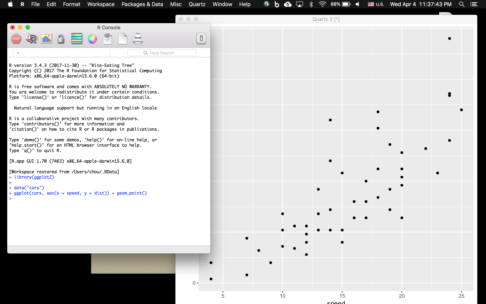
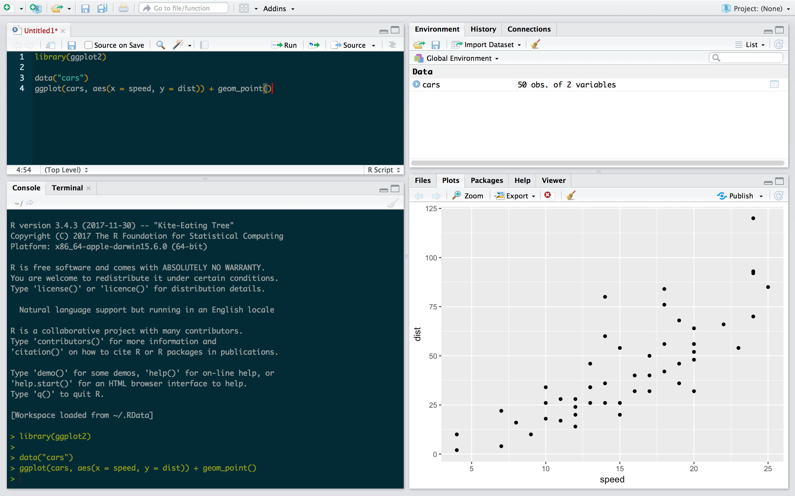
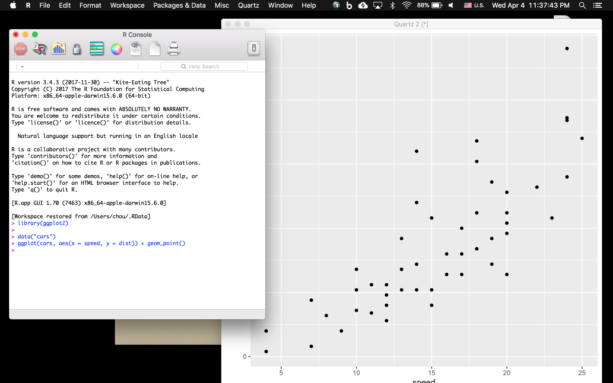
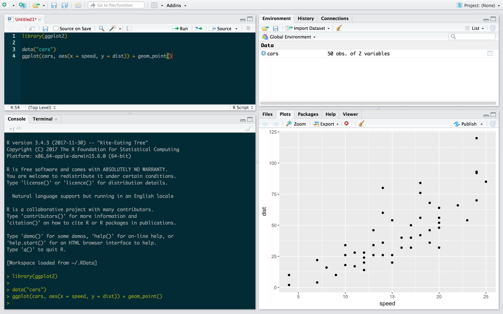

| R | RStudio |
|---|---|
|  |  |
4/4/2018
| R | RStudio |
|---|---|
|  |  |
“The analyses that get me excited are not Google crunching a terabyte of web ad data in order to optimize revenue… [but rather]
the biologists who are absolutely passionate about this one swampfly and now they can use R and they can understand it.“